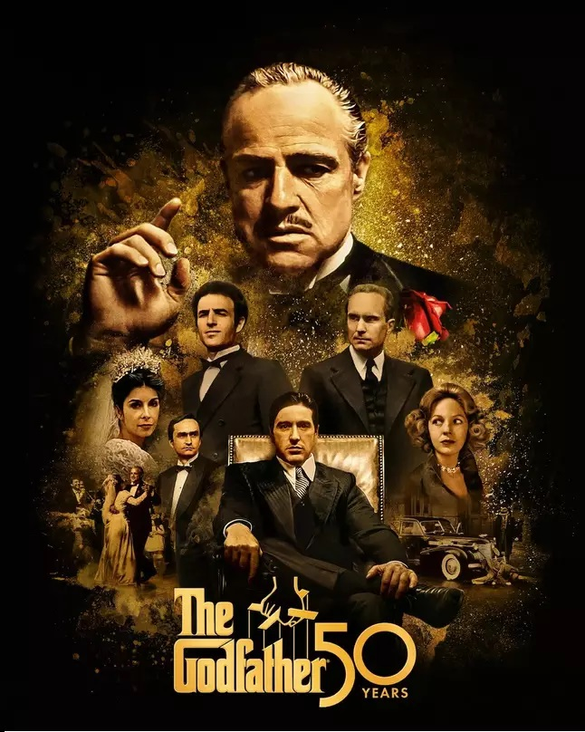

Em 1945, Don Corleone(Marlon Brando) é o chefe de uma das cinco famílias da máfia italiana de Nova York.
Ele costuma apadrinhar várias pessoas, realizando importantes favores para elas, em troca de favores futuros.
Com a chegada das drogas, as famílias começam uma disputa pelo promissor negócio.
Quando os Corleone rejeitam entrar no negócio de narcóticos, Don Corleone sofre uma tentativa de assassinato, tornando a situação da família vulnerável.
É nessa situação que seus filhos, Sonny Corleone, e o herói de guerra nunca envolvido com os negócios da família Michael Corleone, são obrigados a assumir os negócios da família.
